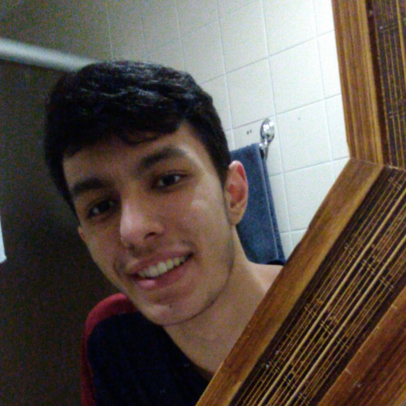

-
Introdução
Objetivos da Web Quest
• Obter conhecimentos específicos sobre os conteúdos expostos em sala de aula.
• Ajudar no Aprendizado
• Ajudar outras pessoas a terem acesso a essa ferramenta
Introdução
Esse WebQuest foi desenvolvido no dia 11 de Agosto de 2021, pelos os aluno de Análise e Desenvolvimento de Sistemas: Daniel da Anunciação França Leite, Charles Magalhães Lopes Junior, Enzo Giovanni Mendes, Guilherme Zagato e João Victor Holtz Palma da Faculdade de Tecnologia de Carapicuíba, para a matéria de Cálculo do Professor responsável: Luciano Octavio Condori Huanca, com o objetivo exclusivo de material de apoio e como forma de trabalho para desenvolvermos um melhor estudo da matéria de Cálculo.
-
-
-
-
-
Colaboradores
Daniel da Anunciação França Leite, Análise e Desenvolvimento de Sistemas (FATEC)
Guilherme Zagato, Análise e Desenvolvimento de Sistemas (FATEC)

João Victor Holtz, Análise e Desenvolvimento de Sistemas (FATEC)

Enzo Giovanni, Análise e Desenvolvimento de Sistemas (FATEC)
Charles Magalhães, Análise e Desenvolvimento de Sistemas (FATEC)